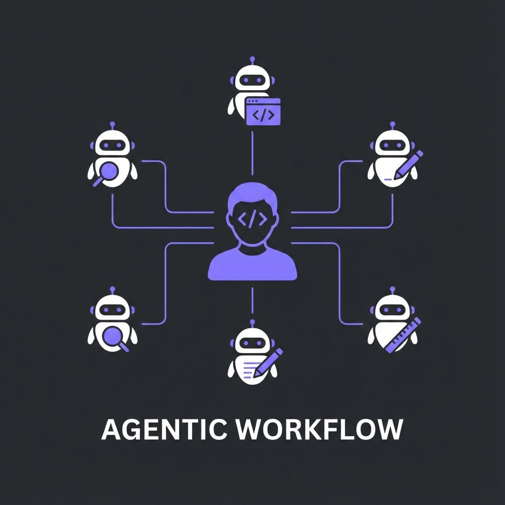

AI 페어프로그래밍
Day 3-1: Agentic Workflow 개념 & Skills
김학민 · SE P/J · 2025.12
Day 2 리캡
- Context Engineering — 맥락이 품질을 결정
- CLAUDE.md — 프로젝트 맥락 파일
- Rule-Growing — 룰이 점점 정교해짐
- 파이프라인 & TDD — 반복 가능한 개발
오늘의 목표
나만의 Agent Factory 구축
Agentic Workflow의 철학 이해
Skills, Commands, Hooks 활용
MCP로 외부 도구 연결

자율적인 AI 에이전트 팀과 나만의 워크플로우 팩토리
Agentic
Workflow
AI를 단순 도구가 아닌
자율적 협업자로 활용
Agentic이란
Traditional
질문 → 답변
1회성 상호작용
수동적
Agentic
목표 → 자율 실행
다단계 추론
능동적
워크플로우가 핵심이다
AI 모델은 누구나 같은 걸 쓴다
차별화는 워크플로우에서 나온다
"좋은 워크플로우를 구축하려면
개인화된 방식을 스스로 깨우치고 학습하는 게 중요하다"
개인화 철학
- 남의 워크플로우 복사 — 맥락이 다르면 효과 없음
- 패턴 학습 — 다른 사람의 접근법 참고
- 자신만의 구축 — 내 업무에 맞게 커스터마이징
오늘은 패턴을 배우고, 내 것으로 만드는 시간
워크플로우 패턴 3가지
- 검증 루프 — 요구사항/설계/코드 각 단계 검증
- 병렬 에이전트 — 여러 관점에서 동시 분석
- 루프백 & 에스컬레이션 — 실패시 재시도, 한계시 사람에게
Skills
워크플로우를 패키지로 만들기
/명령어 하나로 복잡한 작업 실행
Skill이란
Before
매번 긴 프롬프트 입력
반복되는 설명
일관성 없음
After
/my-workflow
한 번에 실행
항상 동일
Skill 폴더 구조
~/.claude/skills/my-workflow/
├── SKILL.md # 스킬 정의 (필수)
├── templates/ # 템플릿 파일들
│ └── prd.md
├── prompts/ # 프롬프트 모음
│ └── analysis.md
└── examples/ # 예시 파일들
SKILL.md만 있으면 스킬로 인식됩니다
SKILL.md 기본 구조
---
name: my-workflow
description: 코드 리뷰 자동화 워크플로우
triggers:
- /review
- /코드리뷰
---
# 코드 리뷰 워크플로우
## 실행 단계
1. 변경된 파일 목록 확인
2. 각 파일 코드 리뷰
3. 리뷰 결과 정리
실제 Skill 예시: 코드리뷰
---
name: code-review
description: MISRA C 기준 코드 리뷰
triggers: [/review, /리뷰]
---
# 코드 리뷰 워크플로우
## 검토 기준
- MISRA C 2012 위반 사항
- 메모리 누수 가능성
- NULL 포인터 체크 누락
## 출력 형식
| 파일 | 라인 | 심각도 | 내용 |
Skill 실행하기
$ claude
> /review src/gc_module.c
SKILL.md의 워크플로우대로 자동 실행
슬래시 명령어로 간단하게 실행
Commands
& Hooks
자동화의 핵심 요소
Commands: 커스텀 명령어
{
"customCommands": {
"/build": "make -j8 TARGET=release",
"/test": "make test SUITE=unit",
"/lint": "cppcheck --enable=all src/"
}
}
자주 쓰는 명령어를 단축키처럼 등록
Hooks: 자동 트리거
특정 이벤트에 자동으로 반응
Hook 설정 예시
{
"hooks": {
"PostToolUse": [{
"matcher": "Write",
"hooks": [{
"type": "command",
"command": "make lint"
}]
}]
}
}
파일 저장 후 자동으로 lint 실행
Hook 활용 사례
- 코드 작성 후 — 자동 포맷팅, lint 실행
- 테스트 실행 후 — 커버리지 리포트 생성
- 세션 종료 시 — 작업 로그 저장
- 서브에이전트 종료 — 결과 집계, 다음 단계 트리거
Skill 만들기 실습
- Step 1 — ~/.claude/skills/my-first/ 폴더 생성
- Step 2 — SKILL.md 작성 (이름, 설명, 트리거)
- Step 3 — 워크플로우 단계 정의
- Step 4 — /my-first 로 테스트
Part 1 핵심 정리
- Agentic Workflow — 자율적 협업자로서의 AI
- 개인화 — 패턴을 배우고 내 것으로 만들기
- Skills — 워크플로우를 /명령어로 패키징
- Hooks — 이벤트 기반 자동 트리거
점심 시간
오후: MCP 연동 & 나만의 워크플로우 설계